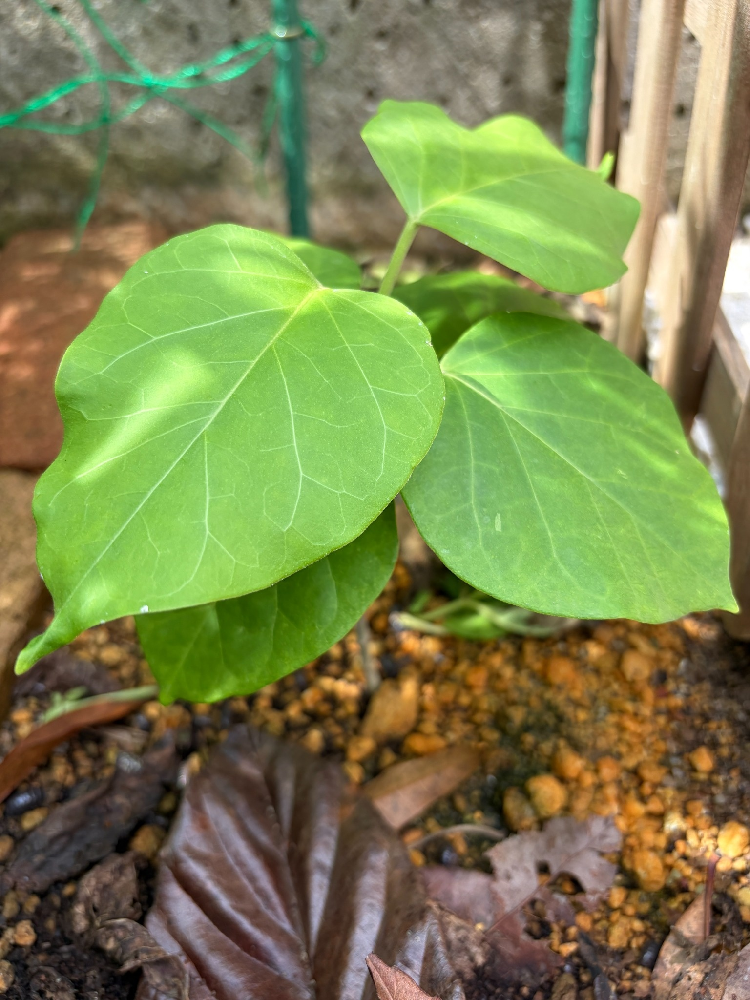

6月27日から2週間、葉の重なりが目を引きます
7月11日のキジョランです。前回の6月27日から14日がたちました。5月31日に、これまでより日当たりを確保できる場所へ移してからは、41日になります。
今回も幅広い緑の葉を広げています。手前の左右には大きな葉があり、その下や奥にも葉が重なっています。さらに上の位置にも葉が広がり、小さな株ながら、上下に葉が付いた立体的な姿になってきました。
6月27日は、大きな葉の間に小さな新葉が立ち上がり、中央の茎も見えていました。今回は葉そのものの存在感が大きく、株の中心が葉に隠れる部分も増えています。
花や蕾はまだ見られませんが、葉の広がりや重なりを楽しめる姿です。

手前の大きな葉が、株の姿を作っています
特に目を引くのは、左手前と右側に広がる大きな葉です。どちらも丸みのある幅広い形で、葉先に向かって細くなっています。
左手前の葉は、付け根から左右へふくらみ、大きな葉面をこちらへ向けています。右側の葉も横へ広がり、2枚の葉が株の前面を覆うように見えます。その下には濃い緑色の葉が一部見えており、手前の葉の後ろにも葉が続いていることが分かります。
一枚一枚が幅広いため、葉が重なると、株全体に緑の厚みが出ます。長いつるが伸びた姿ではありませんが、葉を広げるだけでも、株の印象が変わってくるのだと感じます。
撮影する距離や向きが前回とは違うため、葉が何センチ大きくなったかまでは分かりません。それでも今回は、前面を大きく占める葉と、その後ろに重なる葉の組み合わせが印象的です。
上の位置にも葉が広がっています
手前の大きな葉より高い位置には、明るい緑色の葉が広がっています。葉柄が斜め上へ伸び、その先で葉身を支えている様子が見えます。
この上側の葉は、手前の葉とは角度が違い、少し横向きに開いています。葉の縁には波打ったような起伏があり、完全に平らな形ではありません。奥にも別の葉の一部が見え、重なっているため、上側の葉の境目には分かりにくいところもあります。
6月27日は、中央に小さな新葉があることが見どころでした。今回は株の上側にも広い葉面が見え、低い位置の葉だけでなく、高さの違う葉が株の姿を作っています。
ただし、前回の小さな新葉が、今回のどの葉に当たるのかまでは特定できません。小さかった葉がすべてこの姿になったと決めるのではなく、今は上側にも葉が広がっていることを記録しておきます。
葉脈がはっきりし、細かな筋まで見えます
左手前の葉では、付け根から葉先へ伸びる太い葉脈が明るい線となって見えます。そこから左右へ枝分かれし、さらに細かな筋が網目のようにつながっています。
右側の葉にも同じように葉脈が広がり、幅広い葉の中に細かな模様を作っています。葉が大きく開いているため、中央の太い筋だけでなく、その間をつなぐ細い筋も分かりやすくなっています。
葉の縁にはわずかな起伏がありますが、大きな葉面は保たれています。丸みのある輪郭と、そこに広がる葉脈が、今回の写真ではよく分かります。
水滴に覆われていた前回とは、葉の表情が違います
6月27日は、葉の表面に細かな水滴がたくさん付いていました。水が光を反射し、葉面に白っぽい模様が広がったように見える部分もありました。
今回は、そのように葉全体を覆う水滴は目立ちません。葉の表面や葉脈が見やすく、なめらかな葉面の様子が分かります。
同じ緑の葉でも、濡れているときと、目立った水滴がないときでは印象が違います。前回より色が淡く見える部分があっても、水滴の有無や光の当たり方が違うため、そのまま葉色の変化と決めないようにしたいと思います。
今回は、葉に落ちる光と影もはっきりしています。左手前の葉には明るい部分と影になる部分があり、右側の葉にも、まだらに光が当たっています。
明るい緑と、葉の奥の濃い緑
手前や上側の葉は、明るい緑色に見えます。一方、葉が重なった奥や下側には、濃い緑色に見える部分があります。
右側の大きな葉には、淡い黄緑色が混じるような濃淡もあります。ただ、木漏れ日のように光と影が重なっているため、明るく見えるところがすべて黄変しているとは言えません。
4月25日に見られた、黄色くなった葉や茶色く縁取られた傷みとは、全体の印象が異なります。今回は緑の葉面が大きく広がり、葉の輪郭もしっかりと残っています。
葉色だけで株の状態を決めるのではなく、葉の形や傷みの有無、これから先の変化も一緒に見ていきたいと思います。
大きな穴や、広い枯れ込みは目立ちません
見える葉には、大きく抜け落ちた穴や、広い範囲が茶色く枯れた部分は目立ちません。手前の大きな葉も、全体の形を保っています。
葉の表面には、小さな白っぽい点や跡がいくつかあります。右側の葉にも淡い色の小さな跡が見えますが、何かが付いたものなのか、葉面の傷なのかまでは分かりません。
葉の縁には小さなへこみや波打ちがありますが、葉が大きく失われている状態ではありません。今のところ、見える範囲では広い葉面が残っていることを記録しておきます。
葉が重なり、茎先の細部は見えにくくなっています
6月27日は、中央の小さな葉と、その下の緑色の茎が見えていました。今回は大きな葉が前面に広がり、株の中心を隠しています。
上側の葉へ伸びる葉柄は見えますが、茎先や新芽の細かな状態は、葉の重なりに隠れて分かりにくくなっています。そのため、小さな新葉が新たに何枚出ているのか、先端がどれだけ伸びたのかまでは判断できません。
写真では、手前の大きな葉2枚、上側の葉、下や奥に一部見える葉があります。ただし、隠れた葉もあるため、この一枚だけで株全体の正確な葉数を数えるのは難しい状態です。
今は枚数を決めるよりも、幅広い葉が上下に重なり、株の中心を覆うようになっていることを残しておきたいと思います。
支柱やネットはありますが、長いつるはまだ目立ちません
株の後ろには、支柱と緑色のネットがあります。今後つるが伸びたときに、どちらへ向かっていくのかも気になります。
ただ、この日の見える範囲では、つるが長く伸びてネットや支柱に巻き付いている姿は確認できません。上の位置に葉はありますが、長いつるを伸ばして登るというより、葉を重ねて広げた株の姿が中心です。
大きな葉の成長と、つるの伸び方は分けて見ていきたいと思います。葉が増えて株に厚みが出てきた先で、茎先がどのように動くのかを楽しみにしています。
花や蕾はまだ見られません
7月11日の見える範囲には、開いた花や、まとまった花の蕾は見られません。葉が重なって隠れている部分もあるため、株全体の細部までは分かりませんが、今回も記録の中心は葉の姿です。
6月27日からの2週間では、手前の大きな葉と、上側に広がる葉が作る立体感が印象に残りました。春には黄変や傷みが気になっていた株が、今は緑の葉を重ねています。
日当たりを確保できる場所へ移してから約6週間。これからも葉の状態を見ながら、新しい葉やつるがどのように伸びるのかを記録していきたいと思います。